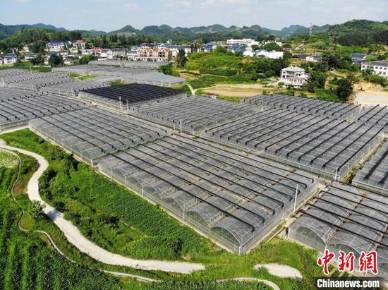
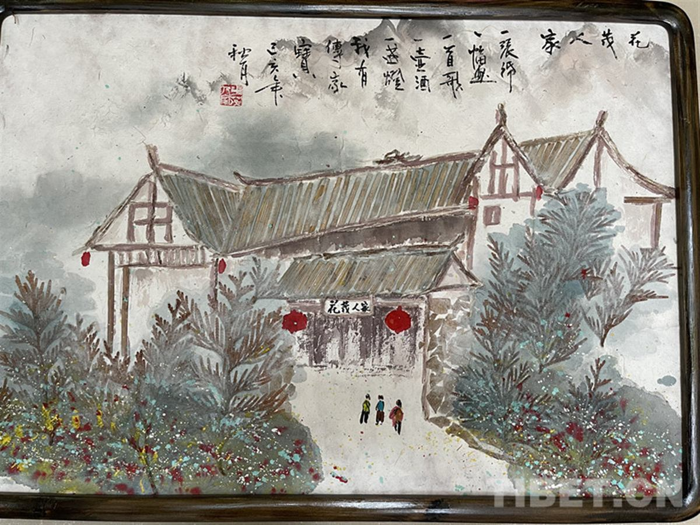

花茂今天靠什么吃饭？一组数字、三条产业线，说清楚。
数据来源：人民网《党建调研行》2026.7；人民日报《乡村绘新景》2026.6。

花茂村山区土地分散，过去都是巴掌大的小块田。村里推高标准农田建设，把零散地整合，提高机械化水平。
引进山东寿光九丰农业，通过土地流转把地租给企业。村民拿租金，还能进企业打工拿工资，一地多收。
九丰农业带动 180 余人长期就业，大棚辐射周边种植蔬菜2500亩。
邻近苟坝会议会址，"红色之家"老板王豪把自家院子改成歇脚点，游客围坐八仙桌听红军故事，去年纯利80万元。
"我在花茂有块田"认养区，游客可亲手犁地、播种、采摘。村民何万明说，以前荒地现在每亩产值5000到10000元。
花茂土陶上百年历史，母先才陶艺馆年入二三十万，游客可亲手拉坯。"花茂人家"把古法造纸和压花结合，做成纸浆压花画伴手礼。

土陶烧制：花茂土陶上百年历史，最盛时全村四成村民烧陶。母先才陶艺馆年入二三十万，游客可亲手拉坯。
古法造纸："花茂人家"把古法造纸和压花结合，做成纸浆压花画、小夜灯、冰箱贴，成了游客必带伴手礼。
花茂村实现集中居住区污水处理全覆盖，生活垃圾收运和无害化处理率达到100%。绿水青山不是口号，是游客愿意来、村民愿意留的基础。
来源：新华网《遵义"绿色答卷"沉甸甸》2026.7